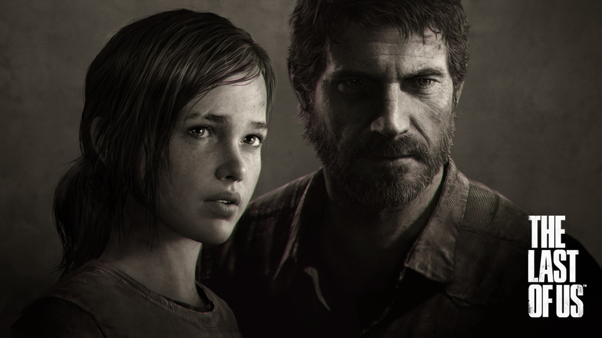

Jugamos The Last of Us 2 y esto es lo que puedes esperar
The Last Of Us parte II llega en unos días para fortuna de todos los gamers al Playstation 4 y sin ningún spolier te contamos algunos detalles de una historia apasionante y que te deja sin aliento.
Desarrollado por Naughty Dog en exclusiva para el Playstation 3 y luego remasterizado para el 4, The Last Of Us logró hacerse de los máximos galardones de la industria de los videojuegos, llevándose en 2014 los BAFTA, premios entregados por la Academia Británica de las Artes Cinematográficas y la Televisión o el equivalente inglés al Oscar, a mejor juego del año, mejor juego de acción y aventura, mejor actuación, mejor sonido y mejor guión. Y es que justamente el guión y por supuesto, la música del ganador del Oscar, Gustavo Santaolalla, crearon un verdadero clásico gamer que lo convirtió además en un juego de culto inmediato. Ahora, luego de haberse mostrado hace cuatro años el primer trailer de la segunda parte, The Last Of Us parte 2 (TLOU2) llegará el próximo 19 de junio a las consolas de millones de jugadores, que están a punto de convertirlo en el título con el mayor número de preventa en la historia de Playstation, superando a juegos como God of War y Spiderman.
¿De qué trata The Last Of Us 2?
La historia nos muestra de nuevo a Joel y Ellie años después del final de la primera entrega, donde no se logró encontrar una cura para la enfermedad que aqueja y ha destruido a buena parte de la civilización humana, pero que llevó a estos dos personajes a reencontrarse con ellos mismos y recuperar la fe y la confianza en los demás. Hay nuevos personajes que como Ellie y Joel, se convierten en parte fundamental del universo de The Last of Us, y que darán un giro a la historia que a diferencia de la primera parte, donde llegas a darte cuenta que el motor de la misma es el amor, esta vez la venganza es lo que mueve la trama, y es que el mismo director del juego lo comentó en una carta incluida con la copia de reseña que se no dio a los periodistas.